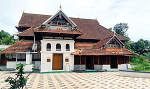

Explore the Rich Past of Kerala's Cultural Heritage
Changanassery’s history stretches back to ancient times. Once known as "Anchu Vilakku Pattanam" or the "City of Five Lamps," the town was a thriving center for trade and cultural exchange. Its name reflects the age-old tradition where a temple, church, and mosque were established around the palace—symbolizing unity in diversity.
Historically, Changanassery played an important role as a trading hub. The bustling market, established centuries ago, served as the main conduit for commodities like rice, spices, and textiles. Over time, the town evolved into a center of administration and learning under the rule of local dynasties such as the Thekkumkur kingdom.
Regal landmarks like Neerazhi Palace and Lakshmipuram Palace still stand today as reminders of Changanassery’s royal past. Alongside these, the town is renowned for its religious landmarks—ancient temples, historic churches, and venerable mosques—each echoing the harmonious coexistence of its diverse communities.
